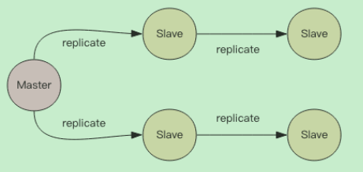

Redis集群
分布式数据库的基本原理
CAP原理
- C-Consistent，一致性
- A-Availability，可用性
- P-Partition tolerance，分区容忍性
CAP原理就是–网络分区发生时，一致性和可用性两难全。
最终一致性
Redis的主从数据是异步同步的，所以分布式的Redis系统并不满足一致性要求。当客户端在Redis的主节点修改了数据后，立即返回，即使在主从网络断开的情况下，主节点依旧可以正常对外提供修改服务，所以Redis满足可用性。
Redis保证最终一致性，从节点会努力追赶主节点，最终从节点的状态会和主节点的状态将保持一致。如果网络断开了，主从节点的数据将会出现大量不一致，一旦网络恢复，从节点会采用多种策略努力追赶上落后的数据，继续尽力保持和主节点一致。
主从同步
Redis同步支持主从同步和从从同步

增量同步
Redis同步的是指令流，主节点会将那些对自己状态产生修改性影响的指令，记录在本地内存buffer中，然后异步将buffer中的指令同步到从节点，从节点一边执行同步的指令流来达到和主节点一样的状态，一边向主节点反馈自己同步到哪里了。
因为内存的buffer是有限的，所以Redis主库不能将所有的指令都记录在内存buffer中。Redis的复制内存buffer是一个定长的环形数组，如果数组内容满了，就会从头开始覆盖前面的内容。
快照同步
-------------本文结束感谢您的阅读-------------